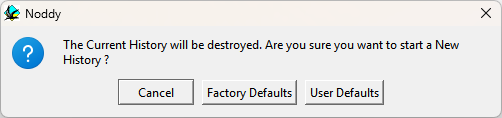

Installing Noddy
Download a compiled version
Compiled versions for all three platforms are built automatically from the GitHub repository and published on the latest release page (older versions are on the Releases page).
| Platform | File | How to install |
|---|---|---|
| Windows | noddy-windows.zip | Unzip anywhere and run noddy.exe. All Qt libraries are included. |
| macOS | noddy-macos.dmg | Open the disk image and drag Noddy to Applications. |
| Linux | noddy-linux.tar.gz | Unpack and run ./noddy. Requires the Qt 5 libraries (on Ubuntu/Debian: sudo apt-get install qtbase5-dev). |
The release packages also contain three sample files used in this guide: TOPOFILE.TOP (a topography grid),
PROPERTY.ROX (the rock property database) and UNCON2.DXF (a triangulated surface).
Build from source
Noddy is a C program with a small C++ layer for the Qt user interface. With a C/C++ compiler and the Qt 5 development packages installed, run
makein the repository root. The same command works on Linux, macOS and Windows (MSYS2 MinGW64). See the repository README for the packages needed on each platform.
Running without a display
For batch work on a server, set Qt's offscreen platform:
QT_QPA_PLATFORM=offscreen ./noddy model.his -anomSee Command-line (batch) mode.
Start-up files
When you choose you can start from the factory defaults or from
your own defaults. writes the current history to
defaults.his in Noddy's start-up folder, and User Defaults loads it.

Noddy · open source under the MIT licence · Loop3D/noddy_qt